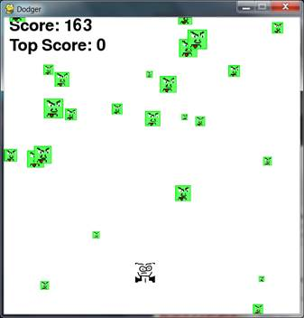

|
|
Chapter 20 |
Dodger |

Topics Covered In This Chapter:
· The pygame.FULLSCREEN flag
· Pygame constant variables for keyboard keys
· The move_ip()Rect method
· The pygame.mouse.set_pos() function
· Implementing cheat codes
· Modifying the Dodger game
The last three chapters went over the Pygame module and demonstrated how to use its many features. In this chapter, we’ll use that knowledge to create a graphical game called Dodger.
The Dodger game has the player control a small person (which we call the player’s character) who must dodge a whole bunch of baddies that fall from the top of the screen. The longer the player can keep dodging the baddies, the higher the score they will get.
Just for fun, we’ll also add some cheat modes to the game. If the player holds down the “x” key, every baddie’s speed is reduced to a super slow rate. If the player holds down the “z” key, the baddies will reverse their direction and travel up the screen instead of downwards.
Review of the Basic Pygame Data Types
Let’s review some of the basic data types used in Pygame:
· pygame.Rect - Rect objects represent a rectangular space’s location and size. The location can be determined by the Rect object’s topleft attribute (or the topright, bottomleft, and bottomright attributes). These corner attributes are a tuple of integers for the X- and Y-coordinates. The size can be determined by the width and height attributes, which are integers of how many pixels long or high the rectangle area is. Rect objects have a colliderect() method to check if they are colliding with another Rect object.
· pygame.Surface - Surface objects are areas of colored pixels. Surface objects represent a rectangular image, while Rect objects only represent a rectangular space and location. Surface objects have a blit() method that is used to draw the image on one Surface object onto another Surface object. The Surface object returned by the pygame.display.set_mode() function is special because anything drawn on that Surface object is displayed on the user’s screen when pygame.display.update() is called.
· pygame.event.Event - The pygame.event module generates Event objects whenever the user provides keyboard, mouse, or another kind of input. The pygame.event.get() function returns a list of these Event objects. You can check what type of event the Event object is by checking its type attribute. QUIT, KEYDOWN, and MOUSEBUTTONUP are examples of some event types.
· pygame.font.Font - The pygame.font module has the Font data type which represents the typeface used for text in Pygame. The arguments to pass to pygame.font.SysFont() are a string of the font name and an integer of the font size. However it is common to pass None for the font name to get the default system font.
· pygame.time.Clock - The Clock object in the pygame.time module is helpful for keeping our games from running as fast as possible. The Clock object has a tick() method, which we pass how many frames per second (FPS) we want the game to run at. The higher the FPS, the faster the game runs.
Type in the following code and save it to a file named dodger.py. This game also requires some other image and sound files, which you can download from the URL http://invpy.com/downloads.
Source Code of Dodger
You can download this code from the URL http://invpy.com/chap20. If you get errors after typing this code in, compare the code you typed to the book’s code with the online diff tool at http://invpy.com/diff/dodger.
1. import pygame, random, sys
2. from pygame.locals import *
3.
4. WINDOWWIDTH = 600
5. WINDOWHEIGHT = 600
6. TEXTCOLOR = (255, 255, 255)
7. BACKGROUNDCOLOR = (0, 0, 0)
8. FPS = 40
9. BADDIEMINSIZE = 10
10. BADDIEMAXSIZE = 40
11. BADDIEMINSPEED = 1
12. BADDIEMAXSPEED = 8
13. ADDNEWBADDIERATE = 6
14. PLAYERMOVERATE = 5
15.
16. def terminate():
17. pygame.quit()
18. sys.exit()
19.
20. def waitForPlayerToPressKey():
21. while True:
22. for event in pygame.event.get():
23. if event.type == QUIT:
24. terminate()
25. if event.type == KEYDOWN:
26. if event.key == K_ESCAPE: # pressing escape quits
27. terminate()
28. return
29.
30. def playerHasHitBaddie(playerRect, baddies):
31. for b in baddies:
32. if playerRect.colliderect(b['rect']):
33. return True
34. return False
35.
36. def drawText(text, font, surface, x, y):
37. textobj = font.render(text, 1, TEXTCOLOR)
38. textrect = textobj.get_rect()
39. textrect.topleft = (x, y)
40. surface.blit(textobj, textrect)
41.
42. # set up pygame, the window, and the mouse cursor
43. pygame.init()
44. mainClock = pygame.time.Clock()
45. windowSurface = pygame.display.set_mode((WINDOWWIDTH, WINDOWHEIGHT))
46. pygame.display.set_caption('Dodger')
47. pygame.mouse.set_visible(False)
48.
49. # set up fonts
50. font = pygame.font.SysFont(None, 48)
51.
52. # set up sounds
53. gameOverSound = pygame.mixer.Sound('gameover.wav')
54. pygame.mixer.music.load('background.mid')
55.
56. # set up images
57. playerImage = pygame.image.load('player.png')
58. playerRect = playerImage.get_rect()
59. baddieImage = pygame.image.load('baddie.png')
60.
61. # show the "Start" screen
62. drawText('Dodger', font, windowSurface, (WINDOWWIDTH / 3), (WINDOWHEIGHT / 3))
63. drawText('Press a key to start.', font, windowSurface, (WINDOWWIDTH / 3) - 30, (WINDOWHEIGHT / 3) + 50)
64. pygame.display.update()
65. waitForPlayerToPressKey()
66.
67.
68. topScore = 0
69. while True:
70. # set up the start of the game
71. baddies = []
72. score = 0
73. playerRect.topleft = (WINDOWWIDTH / 2, WINDOWHEIGHT - 50)
74. moveLeft = moveRight = moveUp = moveDown = False
75. reverseCheat = slowCheat = False
76. baddieAddCounter = 0
77. pygame.mixer.music.play(-1, 0.0)
78.
79. while True: # the game loop runs while the game part is playing
80. score += 1 # increase score
81.
82. for event in pygame.event.get():
83. if event.type == QUIT:
84. terminate()
85.
86. if event.type == KEYDOWN:
87. if event.key == ord('z'):
88. reverseCheat = True
89. if event.key == ord('x'):
90. slowCheat = True
91. if event.key == K_LEFT or event.key == ord('a'):
92. moveRight = False
93. moveLeft = True
94. if event.key == K_RIGHT or event.key == ord('d'):
95. moveLeft = False
96. moveRight = True
97. if event.key == K_UP or event.key == ord('w'):
98. moveDown = False
99. moveUp = True
100. if event.key == K_DOWN or event.key == ord('s'):
101. moveUp = False
102. moveDown = True
103.
104. if event.type == KEYUP:
105. if event.key == ord('z'):
106. reverseCheat = False
107. score = 0
108. if event.key == ord('x'):
109. slowCheat = False
110. score = 0
111. if event.key == K_ESCAPE:
112. terminate()
113.
114. if event.key == K_LEFT or event.key == ord('a'):
115. moveLeft = False
116. if event.key == K_RIGHT or event.key == ord('d'):
117. moveRight = False
118. if event.key == K_UP or event.key == ord('w'):
119. moveUp = False
120. if event.key == K_DOWN or event.key == ord('s'):
121. moveDown = False
122.
123. if event.type == MOUSEMOTION:
124. # If the mouse moves, move the player where the cursor is.
125. playerRect.move_ip(event.pos[0] - playerRect.centerx, event.pos[1] - playerRect.centery)
126.
127. # Add new baddies at the top of the screen, if needed.
128. if not reverseCheat and not slowCheat:
129. baddieAddCounter += 1
130. if baddieAddCounter == ADDNEWBADDIERATE:
131. baddieAddCounter = 0
132. baddieSize = random.randint(BADDIEMINSIZE, BADDIEMAXSIZE)
133. newBaddie = {'rect': pygame.Rect(random.randint(0, WINDOWWIDTH-baddieSize), 0 - baddieSize, baddieSize, baddieSize),
134. 'speed': random.randint(BADDIEMINSPEED, BADDIEMAXSPEED),
135. 'surface':pygame.transform.scale(baddieImage, (baddieSize, baddieSize)),
136. }
137.
138. baddies.append(newBaddie)
139.
140. # Move the player around.
141. if moveLeft and playerRect.left > 0:
142. playerRect.move_ip(-1 * PLAYERMOVERATE, 0)
143. if moveRight and playerRect.right < WINDOWWIDTH:
144. playerRect.move_ip(PLAYERMOVERATE, 0)
145. if moveUp and playerRect.top > 0:
146. playerRect.move_ip(0, -1 * PLAYERMOVERATE)
147. if moveDown and playerRect.bottom < WINDOWHEIGHT:
148. playerRect.move_ip(0, PLAYERMOVERATE)
149.
150. # Move the mouse cursor to match the player.
151. pygame.mouse.set_pos(playerRect.centerx, playerRect.centery)
152.
153. # Move the baddies down.
154. for b in baddies:
155. if not reverseCheat and not slowCheat:
156. b['rect'].move_ip(0, b['speed'])
157. elif reverseCheat:
158. b['rect'].move_ip(0, -5)
159. elif slowCheat:
160. b['rect'].move_ip(0, 1)
161.
162. # Delete baddies that have fallen past the bottom.
163. for b in baddies[:]:
164. if b['rect'].top > WINDOWHEIGHT:
165. baddies.remove(b)
166.
167. # Draw the game world on the window.
168. windowSurface.fill(BACKGROUNDCOLOR)
169.
170. # Draw the score and top score.
171. drawText('Score: %s' % (score), font, windowSurface, 10, 0)
172. drawText('Top Score: %s' % (topScore), font, windowSurface, 10, 40)
173.
174. # Draw the player's rectangle
175. windowSurface.blit(playerImage, playerRect)
176.
177. # Draw each baddie
178. for b in baddies:
179. windowSurface.blit(b['surface'], b['rect'])
180.
181. pygame.display.update()
182.
183. # Check if any of the baddies have hit the player.
184. if playerHasHitBaddie(playerRect, baddies):
185. if score > topScore:
186. topScore = score # set new top score
187. break
188.
189. mainClock.tick(FPS)
190.
191. # Stop the game and show the "Game Over" screen.
192. pygame.mixer.music.stop()
193. gameOverSound.play()
194.
195. drawText('GAME OVER', font, windowSurface, (WINDOWWIDTH / 3), (WINDOWHEIGHT / 3))
196. drawText('Press a key to play again.', font, windowSurface, (WINDOWWIDTH / 3) - 80, (WINDOWHEIGHT / 3) + 50)
197. pygame.display.update()
198. waitForPlayerToPressKey()
199.
200. gameOverSound.stop()
When you run this program, the game will look like Figure 20-1.

Figure 20-1: An altered screenshot of the Dodger game.
Importing the Modules
1. import pygame, random, sys
2. from pygame.locals import *
The Dodger game imports the same modules previous Pygame programs have: pygame, random, sys, and pygame.locals. The pygame.locals module contains several constant variables that Pygame uses such as the event types (QUIT, KEYDOWN, etc.) and keyboard keys (K_ESCAPE, K_LEFT, etc.). By using the from pygame.locals import * syntax, you can just type QUIT in the source code instead of pygame.locals.QUIT.
Setting Up the Constant Variables
4. WINDOWWIDTH = 600
5. WINDOWHEIGHT = 600
6. TEXTCOLOR = (255, 255, 255)
7. BACKGROUNDCOLOR = (0, 0, 0)
The constant variables on lines 4 to 14 are much more descriptive than typing out the values. For example, from the line windowSurface.fill(BACKGROUNDCOLOR) is more understandable than windowSurface.fill((0, 0, 0)).
You can easily change the game by changing the constant variables. By changing WINDOWWIDTH on line 4, you automatically change the code everywhere WINDOWWIDTH is used. If you had used the value 600 instead, then you would have to change each occurrence of 600 in the code. It is easier to change the value in the constant once.
8. FPS = 40
The mainClock.tick() method call on line 189 will slow the game down enough to be playable. You pass an integer to mainClock.tick() so that the function knows how long to pause the program. This integer (which you store in FPS) is the number of frames per second you want the game to run.
A “frame” is the drawing of graphics on the screen for a single iteration through the game loop. You can set FPS to 40, and always call mainClock.tick(FPS). Then you can change FPS to a higher value to have the game run faster or a lower value to slow the game down.
9. BADDIEMINSIZE = 10
10. BADDIEMAXSIZE = 40
11. BADDIEMINSPEED = 1
12. BADDIEMAXSPEED = 8
13. ADDNEWBADDIERATE = 6
Lines 9 to 13 set some more constant variables that will describe the falling baddies. The width and height of the baddies will be between BADDIEMINSIZE and BADDIEMAXSIZE. The rate at which the baddies fall down the screen will be between BADDIEMINSPEED and BADDIEMAXSPEED pixels per iteration through the game loop. And a new baddie will be added to the top of the window every ADDNEWBADDIERATE iterations through the game loop.
14. PLAYERMOVERATE = 5
The PLAYERMOVERATE will store the number of pixels the player’s character moves in the window on each iteration through the game loop if the character is moving. By increasing this number, you can increase the speed the character moves.
Defining Functions
There are several functions you’ll create for the game:
16. def terminate():
17. pygame.quit()
18. sys.exit()
Pygame requires that you call both pygame.quit() and sys.exit(). Put them both into a function called terminate(). Now you only need to call terminate(), instead of both of the pygame.quit() and sys.exit() functions.
20. def waitForPlayerToPressKey():
21. while True:
22. for event in pygame.event.get():
Sometimes you’ll want to pause the game until the player presses a key. Create a new function called waitForPlayerToPressKey(). Inside this function, there’s an infinite loop that only breaks when a KEYDOWN or QUIT event is received. At the start of the loop, pygame.event.get() to return a list of Event objects to check out.
23. if event.type == QUIT:
24. terminate()
If the player has closed the window while the program is waiting for the player to press a key, Pygame will generate a QUIT event. In that case, call the terminate() function on line 24.
25. if event.type == KEYDOWN:
26. if event.key == K_ESCAPE: # pressing escape quits
27. terminate()
28. return
If you receive a KEYDOWN event, then you should first check if it is the esc key that was pressed. If the player presses the esc key, the program should terminate. If that wasn’t the case, then execution will skip the if-block on line 27 and go straight to the return statement, which exits the waitForPlayerToPressKey() function.
If a QUIT or KEYDOWN event isn’t generated, then the code keeps looping. Since the loop does nothing, this will make it look like the game has frozen until the player presses a key.
30. def playerHasHitBaddie(playerRect, baddies):
31. for b in baddies:
32. if playerRect.colliderect(b['rect']):
33. return True
34. return False
The playerHasHitBaddie() function will return True if the player’s character has collided with one of the baddies. The baddies parameter is a list of “baddie” dictionary data structures. Each of these dictionaries has a 'rect' key, and the value for that key is a Rect object that represents the baddie’s size and location.
playerRect is also a Rect object. Rect objects have a method named colliderect() that returns True if the Rect object has collided with the Rect object that is passed to it. Otherwise, colliderect() will return False.
The for loop on line 31 iterates through each baddie dictionary in the baddies list. If any of these baddies collide with the player’s character, then playerHasHitBaddie() will return True. If the code manages to iterate through all the baddies in the baddies list without detecting a collision with any of them, it will return False.
36. def drawText(text, font, surface, x, y):
37. textobj = font.render(text, 1, TEXTCOLOR)
38. textrect = textobj.get_rect()
39. textrect.topleft = (x, y)
40. surface.blit(textobj, textrect)
Drawing text on the window involves a few steps. First, the render() method call on line 37 creates a Surface object that has the text rendered in a specific font on it.
Next, you need to know the size and location of the Surface object. You can get a Rect object with this information from the get_rect() Surface method.
The Rect object returned on line 38 from get_rect() has a copy of the width and height information from the Surface object. Line 39 changes the location of the Rect object by setting a new tuple value for its topleft attribute.
Finally, line 40 blits the Surface object of the rendered text onto the Surface object that was passed to the drawText() function. Displaying text in Pygame take a few more steps than simply calling the print() function. But if you put this code into a single function named drawText(), then you only need to call this function to display text on the screen.
Initializing Pygame and Setting Up the Window
Now that the constant variables and functions are finished, start calling the Pygame functions that set up the window and clock.
42. # set up pygame, the window, and the mouse cursor
43. pygame.init()
44. mainClock = pygame.time.Clock()
Line 43 sets up the Pygame by calling the pygame.init() function. Line 44 creates a pygame.time.Clock() object and stores it in the mainClock variable. This object will help us keep the program from running too fast.
45. windowSurface = pygame.display.set_mode((WINDOWWIDTH, WINDOWHEIGHT))
Line 45 creates a new Surface object which is used for the window displayed on the screen. You can specify the width and height of this Surface object (and the window) by passing a tuple with the WINDOWWIDTH and WINDOWHEIGHT constant variables. Notice that there’s only one argument passed to pygame.display.set_mode(): a tuple. The arguments for pygame.display.set_mode() are not two integers but one tuple of two integers.
46. pygame.display.set_caption('Dodger')
Line 46 sets the caption of the window to the string 'Dodger'. This caption will appear in the title bar at the top of the window.
47. pygame.mouse.set_visible(False)
In Dodger, the mouse cursor shouldn’t be visible. This is because you want the mouse to be able to move the player’s character around the screen, but the mouse cursor would get in the way of the character’s image on the screen. Calling pygame.mouse.set_visible(False) will tell Pygame to make the cursor not visible.
Fullscreen Mode
The pygame.display.set_mode() function has a second, optional parameter. You can pass the pygame.FULLSCREEN constant to make the window take up the entire screen instead of being in a window. Look at this modification to line 45:
45. windowSurface = pygame.display.set_mode((WINDOWWIDTH, WINDOWHEIGHT), pygame.FULLSCREEN)
It will still be WINDOWWIDTH and WINDOWHEIGHT in size for the windows width and height, but the image will be stretched larger to fit the screen. Try running the program wiuth and without fullscreen mode.
49. # set up fonts
50. font = pygame.font.SysFont(None, 48)
Line 49 creates a Font object to use by calling pygame.font.SysFont(). Passing None uses the default font. Passing 48 makes the font have a size of 48 points.
52. # set up sounds
53. gameOverSound = pygame.mixer.Sound('gameover.wav')
54. pygame.mixer.music.load('background.mid')
Next, create the Sound objects and set up the background music. The background music will constantly be playing during the game, but Sound objects will only be played when the player loses the game.
You can use any .wav or .mid file for this game. Some sound files are available at this book’s website at http://invpy.com/downloads. Or you can use your own sound files for this game, as long as they have the filenames of gameover.wav and background.mid. (You can change the strings used on lines 53 and 54 to match the filenames.)
The pygame.mixer.Sound() constructor function creates a new Sound object and stores a reference to this object in the gameOverSound variable. In your own games, you can create as many Sound objects as you like, each with a different sound file.
The pygame.mixer.music.load() function loads a sound file to play for the background music. This function doesn’t return any objects, and only one background sound file can be loaded at a time.
56. # set up images
57. playerImage = pygame.image.load('player.png')
58. playerRect = playerImage.get_rect()
59. baddieImage = pygame.image.load('baddie.png')
Next you’ll load the image files to be used for the player’s character and the baddies on the screen. The image for the character is stored in player.png and the image for the baddies is stored in baddie.png. All the baddies look the same, so you only need one image file for them. You can download these images from this book’s website at http://invpy.com/downloads.
Display the Start Screen
When the game first starts, display the “Dodger” name on the screen. You also want to instruct the player that they can start the game by pushing any key. This screen appears so that the player has time to get ready to start playing after running the program.
61. # show the "Start" screen
62. drawText('Dodger', font, windowSurface, (WINDOWWIDTH / 3), (WINDOWHEIGHT / 3))
63. drawText('Press a key to start.', font, windowSurface, (WINDOWWIDTH / 3) - 30, (WINDOWHEIGHT / 3) + 50)
64. pygame.display.update()
65. waitForPlayerToPressKey()
On lines 62 and 63, call the drawText() function and pass it five arguments:
1) The string of the text you want to appear.
2) The font that you want the string to appear in.
3) The Surface object onto which to render the text.
4) The X coordinate on the Surface object to draw the text at.
5) The Y coordinate on the Surface object to draw the text at.
This may seem like many arguments to pass for a function call, but keep in mind that this function call replaces five lines of code each time you call it. This shortens the program and makes it easier to find bugs since there’s less code to check.
The waitForPlayerToPressKey() function will pause the game by looping until a KEYDOWN event is generated. Then the execution breaks out of the loop and the program continues to run.
Start of the Main Game Code
68. topScore = 0
69. while True:
The value in the topScore variable starts at 0 when the program first runs. Whenever the player loses and has a score larger than the current top score, the top score is replaced with this larger score.
The infinite loop started on line 69 is technically not the “game loop”. The game loop handles events and drawing the window while the game is running. Instead, this while loop will iterate each time the player starts a new game. When the player loses and the game resets, the program’s execution will loop back to line 69.
70. # set up the start of the game
71. baddies = []
72. score = 0
At the beginning, you want to set baddies to an empty list. The baddies variable is a list of dictionary objects with the following keys:
· 'rect' - The Rect object that describes where and what size the baddie is.
· 'speed' - How fast the baddie falls down the screen. This integer represents pixels per iteration through the game loop.
· 'surface' - The Surface object that has the scaled baddie image drawn on it. This is the Surface object that is blitted to the Surface object returned by pygame.display.set_mode().
Line 72 resets the player’s score to 0.
73. playerRect.topleft = (WINDOWWIDTH / 2, WINDOWHEIGHT - 50)
The starting location of the player is in the center of the screen and 50 pixels up from the bottom. The first item in line 73’s tuple is the X-coordinate of the left edge. The second item in the tuple is the Y-coordinate of the top edge.
74. moveLeft = moveRight = moveUp = moveDown = False
75. reverseCheat = slowCheat = False
76. baddieAddCounter = 0
The movement variables moveLeft, moveRight, moveUp, and moveDown are set to False. The reverseCheat and slowCheat variables are also set to False. They will be set to True only when the player enables these cheats by holding down the “z” and “x” keys, respectively.
The baddieAddCounter variable is a counter to tell the program when to add a new baddie at the top of the screen. The value in baddieAddCounter increments by one each time the game loop iterates.
When baddieAddCounter is equal to ADDNEWBADDIERATE, then the baddieAddCounter counter resets to 0 and a new baddie is added to the top of the screen. (This check is done later on line 130.)
77. pygame.mixer.music.play(-1, 0.0)
The background music starts playing on line 77 with a call to pygame.mixer.music.play(). The first argument is the number of times the music should repeat itself. -1 is a special value that tells Pygame you want the music to repeat endlessly.
The second argument is a float that says how many seconds into the music you want it to start playing. Passing 0.0 means the music starts playing from the beginning.
The Game Loop
The game loop’s code constantly updates the state of the game world by changing the position of the player and baddies, handling events generated by Pygame, and drawing the game world on the screen. All of this happens several dozen times a second, which makes it run in “real time”.
79. while True: # the game loop runs while the game part is playing
80. score += 1 # increase score
Line 79 is the start of the main game loop. Line 80 increases the player’s score on each iteration of the game loop. The longer the player can go without losing, the higher their score. The loop will only exit when the player either loses the game or quits the program.
Event Handling
There are four different types of events the program will handle: QUIT, KEYDOWN, KEYUP, and MOUSEMOTION.
82. for event in pygame.event.get():
83. if event.type == QUIT:
84. terminate()
Line 82 is the start of the event-handling code. It calls pygame.event.get(), which returns a list of Event objects. Each Event object represents an event that has happened since the last call to pygame.event.get(). The code will check the type attribute of the event object to see what type of event it is, and handle the event accordingly.
If the type attribute of the Event object is equal to QUIT, then the user has closed the program. The QUIT constant variable was imported from the pygame.locals module.
86. if event.type == KEYDOWN:
87. if event.key == ord('z'):
88. reverseCheat = True
89. if event.key == ord('x'):
90. slowCheat = True
If the event’s type is KEYDOWN, the player has pressed down a key. The Event object for keyboard events will also have a key attribute that is set to the integer ordinal value of the key pressed. The ord() function will return the ordinal value of the letter passed to it.
For example, line 87 checks if the event describes the “z” key being pressed down with event.key == ord('z'). If this condition is True, set the reverseCheat variable to True to indicate that the reverse cheat has been activated. Line 89 checks if the “x” key has been pressed to activate the slow cheat.
Pygame’s keyboard events always use the ordinal values of lowercase letters, not uppercase. Always use event.key == ord('z') instead of event.key == ord('Z'). Otherwise, your program may act as though the key wasn’t pressed.
91. if event.key == K_LEFT or event.key == ord('a'):
92. moveRight = False
93. moveLeft = True
94. if event.key == K_RIGHT or event.key == ord('d'):
95. moveLeft = False
96. moveRight = True
97. if event.key == K_UP or event.key == ord('w'):
98. moveDown = False
99. moveUp = True
100. if event.key == K_DOWN or event.key == ord('s'):
101. moveUp = False
102. moveDown = True
Lines 91 to 102 check if the event was generated by the player pressing one of the arrow or WASD keys. There isn’t an ordinal value for every key on the keyboard, such as the arrow keys or the esc key. Instead, the pygame.locals module provides constant variables to use instead.
Line 91 checks if the player has pressed the left arrow key with event.key == K_LEFT. Notice that pressing down on one of the arrow keys not only sets a movement variable to True, but it also sets the movement variable in the opposite direction to False.
For example, if the left arrow key is pushed down, then the code on line 93 sets moveLeft to True, but it also sets moveRight to False. This prevents the player from confusing the program into thinking that the player’s character should move in two opposite directions at the same time.
Table 20-1 lists commonly-used constant variables for the key attribute of keyboard-related Event objects.
Table 20-1: Constant Variables for Keyboard Keys
|
Pygame Constant Variable |
Keyboard Key |
|
Pygame Constant Variable |
Keyboard Key |
|
K_LEFT |
Left arrow |
|
K_HOME |
Home |
|
K_RIGHT |
Right arrow |
|
K_END |
End |
|
K_UP |
Up arrow |
|
K_PAGEUP |
PgUp |
|
K_DOWN |
Down arrow |
|
K_PAGEDOWN |
PgDn |
|
K_ESCAPE |
Esc |
|
K_F1 |
F1 |
|
K_BACKSPACE |
Backspace |
|
K_F2 |
F2 |
|
K_TAB |
Tab |
|
K_F3 |
F3 |
|
K_RETURN |
Return or Enter |
|
K_F4 |
F4 |
|
K_SPACE |
Space bar |
|
K_F5 |
F5 |
|
K_DELETE |
Del |
|
K_F6 |
F6 |
|
K_LSHIFT |
Left Shift |
|
K_F7 |
F7 |
|
K_RSHIFT |
Right Shift |
|
K_F8 |
F8 |
|
K_LCTRL |
Left Ctrl |
|
K_F9 |
F9 |
|
K_RCTRL |
Right Ctrl |
|
K_F10 |
F10 |
|
K_LALT |
Left Alt |
|
K_F11 |
F11 |
|
K_RALT |
Right Alt |
|
K_F12 |
F12 |
104. if event.type == KEYUP:
105. if event.key == ord('z'):
106. reverseCheat = False
107. score = 0
108. if event.key == ord('x'):
109. slowCheat = False
110. score = 0
The KEYUP event is created whenever the player stops pressing down on a keyboard key and releases it. Event objects with a type of KEYUP also have a key attribute just like KEYDOWN events.
Line 105 checks if the player has released the “z” key, which will deactivate the reverse cheat. In that case, line 106 sets reverseCheat to False and line 107 resets the score to 0. The score reset is to discourage the player for using the cheats.
Lines 108 to 110 do the same thing for the “x” key and the slow cheat. When the “x” key is released, slowCheat is set to False and the player’s score is reset to 0.
111. if event.key == K_ESCAPE:
112. terminate()
At any time during the game, the player can press the esc key on the keyboard to quit. Line 14 checks if the key that was released was the esc key by checking event.key == K_ESCAPE. If so, line 112 calls the terminate() function to exit the program.
114. if event.key == K_LEFT or event.key == ord('a'):
115. moveLeft = False
116. if event.key == K_RIGHT or event.key == ord('d'):
117. moveRight = False
118. if event.key == K_UP or event.key == ord('w'):
119. moveUp = False
120. if event.key == K_DOWN or event.key == ord('s'):
121. moveDown = False
Lines 114 to 121 check if the player has stopped holding down one of the arrow or WASD keys. In that case, the code sets the corresponding movement variable to False.
For example, if the player was holding down the left arrow key, then the moveLeft would have been set to True on line 93. When they release it, the condition on line 114 will evaluate to True, and the moveLeft variable will be set to False.
The move_ip() Method
123. if event.type == MOUSEMOTION:
124. # If the mouse moves, move the player where the cursor is.
125. playerRect.move_ip(event.pos[0] - playerRect.centerx, event.pos[1] - playerRect.centery)
Now that you’ve handled the keyboard events, let’s handle any mouse events that may have been generated. The Dodger game doesn’t do anything if the player has clicked a mouse button, but it does respond when the player moves the mouse. This gives the player two ways of controlling the player character in the game: the keyboard or the mouse.
The MOUSEMOTION event is generated whenever the mouse is moved. Event objects with a type set to MOUSEMOTION also have an attribute named pos for the position of the mouse event. The pos attribute stores a tuple of the X- and Y-coordinates of where the mouse cursor moved in the window. If the event’s type is MOUSEMOTION, the player’s character moves to the position of the mouse cursor.
The move_ip() method for Rect objects will move the location of the Rect object horizontally or vertically by a number of pixels. For example, playerRect.move_ip(10, 20) would move the Rect object 10 pixels to the right and 20 pixels down. To move the Rect object left or up, pass negative values. For example, playerRect.move_ip(-5, -15) will move the Rect object left by 5 pixels and up 15 pixels.
The “ip” at the end of move_ip() stands for “in place”. This is because the method changes the Rect object itself, rather than return a new Rect object with the changes. There is also a move() method which doesn’t change the Rect object, but instead creates and returns a new Rect object in the new location.
Adding New Baddies
127. # Add new baddies at the top of the screen, if needed.
128. if not reverseCheat and not slowCheat:
129. baddieAddCounter += 1
On each iteration of the game loop, increment the baddieAddCounter variable by one. This only happens if the cheats are not enabled. Remember that reverseCheat and slowCheat are set to True as long as the “z” and “x” keys are being held down, respectively
And while those keys are being held down, baddieAddCounter isn’t incremented. Therefore, no new baddies will appear at the top of the screen.
130. if baddieAddCounter == ADDNEWBADDIERATE:
131. baddieAddCounter = 0
132. baddieSize = random.randint(BADDIEMINSIZE, BADDIEMAXSIZE)
133. newBaddie = {'rect': pygame.Rect(random.randint(0, WINDOWWIDTH-baddieSize), 0 - baddieSize, baddieSize, baddieSize),
134. 'speed': random.randint(BADDIEMINSPEED, BADDIEMAXSPEED),
135. 'surface':pygame.transform.scale(baddieImage, (baddieSize, baddieSize)),
136. }
When the baddieAddCounter reaches the value in ADDNEWBADDIERATE, it is time to add a new baddie to the top of the screen. First, the baddieAddCounter counter is reset back to 0.
Line 132 generates a size for the baddie in pixels. The size will be a random integer between BADDIEMINSIZE and BADDIEMAXSIZE, which are constants set to 10 and 40 on lines 9 and 10.
Line 133 is where a new baddie data structure is created. Remember, the data structure for baddies is simply a dictionary with keys 'rect', 'speed', and 'surface'. The 'rect' key holds a reference to a Rect object which stores the location and size of the baddie. The call to the pygame.Rect() constructor function has four parameters: the X-coordinate of the top edge of the area, the Y-coordinate of the left edge of the area, the width in pixels, and the height in pixels.
The baddie needs to appear randomly across the top of the window, so pass random.randint(0, WINDOWWIDTH-baddieSize) for the X-coordinate of the left edge. The reason you pass WINDOWWIDTH-baddieSize instead of WINDOWWIDTH is because this value is for the left edge of the baddie. If the left edge of the baddie is too far on the right side of the screen, then part of the baddie will be off the edge of the window and not visible.
The bottom edge of the baddie should be just above the top edge of the window. The Y-coordinate of the top edge of the window is 0. To put the baddie’s bottom edge there, set the top edge to 0 - baddieSize.
The baddie’s width and height should be the same (the image is a square), so pass baddieSize for the third and fourth argument.
The rate of speed that the baddie moves down the screen is set in the 'speed' key. Set it to a random integer between BADDIEMINSPEED and BADDIEMAXSPEED.
138. baddies.append(newBaddie)
Line 138 will add the newly created baddie data structure to the list of baddie data structures. The program will use this list to check if the player has collided with any of the baddies, and to know where to draw baddies on the window.
Moving the Player’s Character
140. # Move the player around.
141. if moveLeft and playerRect.left > 0:
142. playerRect.move_ip(-1 * PLAYERMOVERATE, 0)
The four movement variables moveLeft, moveRight, moveUp and moveDown are set to True and False when Pygame generates the KEYDOWN and KEYUP events, respectively.
If the player’s character is moving left and the left edge of the player’s character is greater than 0 (which is the left edge of the window), then playerRect should be moved to the left.
You’ll always move the playerRect object by the number of pixels in PLAYERMOVERATE. To get the negative form of an integer, multiple it by -1. On line 142, since 5 is stored in PLAYERMOVERATE, the expression -1 * PLAYERMOVERATE evaluates to -5.
Therefore, calling playerRect.move_ip(-1 * PLAYERMOVERATE, 0) will change the location of playerRect by 5 pixels to the left of its current location.
143. if moveRight and playerRect.right < WINDOWWIDTH:
144. playerRect.move_ip(PLAYERMOVERATE, 0)
145. if moveUp and playerRect.top > 0:
146. playerRect.move_ip(0, -1 * PLAYERMOVERATE)
147. if moveDown and playerRect.bottom < WINDOWHEIGHT:
148. playerRect.move_ip(0, PLAYERMOVERATE)
Lines 143 to 148 do the same thing for the other three directions: right, up, and down. Each of the three if statements in lines 143 to 148 checks that their movement variable is set to True and that the edge of the Rect object of the player is inside the window. Then it calls move_ip() to move the Rect object.
The pygame.mouse.set_pos() Function
150. # Move the mouse cursor to match the player.
151. pygame.mouse.set_pos(playerRect.centerx, playerRect.centery)
Line 151 moves the mouse cursor to the same position as the player’s character. The pygame.mouse.set_pos() function moves the mouse cursor to the X- and Y-coordinates you pass it. This is so that the mouse cursor and player’s character are always in the same place.
Specifically, the cursor will be right in the middle of the character’s Rect object because you passed the centerx and centery attributes of playerRect for the coordinates. The mouse cursor still exists and can be moved, even though it is invisible because of the pygame.mouse.set_visible(False) call on line 47.
153. # Move the baddies down.
154. for b in baddies:
Now loop through each baddie data structure in the baddies list to move them down a little.
155. if not reverseCheat and not slowCheat:
156. b['rect'].move_ip(0, b['speed'])
If neither of the cheats have been activated, then move the baddie’s location down a number of pixels equal to its speed, which is stored in the 'speed' key.
Implementing the Cheat Codes
157. elif reverseCheat:
158. b['rect'].move_ip(0, -5)
If the reverse cheat is activated, then the baddie should move up by five pixels. Passing -5 for the second argument to move_ip() will move the Rect object upwards by five pixels.
159. elif slowCheat:
160. b['rect'].move_ip(0, 1)
If the slow cheat has been activated, then the baddie should move downwards, but only by the slow speed of one pixel per iteration through the game loop. The baddie’s normal speed (which is stored in the 'speed' key of the baddie’s data structure) is ignored while the slow cheat is activated.
Removing the Baddies
162. # Delete baddies that have fallen past the bottom.
163. for b in baddies[:]:
Any baddies that fell below the bottom edge of the window should be removed from the baddies list. Remember that while iterating through a list, do not modify the contents of the list by adding or removing items. So instead of iterating through the baddies list with the for loop, iterate through a copy of the baddies list. This copy is made with the blank slicing operator [:].
The for loop on line 163 uses a variable b for the current item in the iteration through baddies[:].
164. if b['rect'].top > WINDOWHEIGHT:
165. baddies.remove(b)
Let’s evaluate the expression b['rect'].top. b is the current baddie data structure from the baddies[:] list. Each baddie data structure in the list is a dictionary with a 'rect' key, which stores a Rect object. So b['rect'] is the Rect object for the baddie.
Finally, the top attribute is the Y-coordinate of the top edge of the rectangular area. Remember that the Y-coordinates increase going down. So b['rect'].top > WINDOWHEIGHT will check if the top edge of the baddie is below the bottom of the window.
If this condition is True, then line 165 removes the baddie data structure from the baddies list.
Drawing the Window
After all the data structures have been updated, the game world should be drawn using Pygame’s image functions. Because the game loop is executed several times a second, drawing the baddies and player in new positions makes their movement look smooth and natural.
167. # Draw the game world on the window.
168. windowSurface.fill(BACKGROUNDCOLOR)
First, before drawing anything else, line 168 blacks out the entire screen to erase anything drawn on it previously.
Remember that the Surface object in windowSurface is the special Surface object because it was the one returned by pygame.display.set_mode(). Therefore, anything drawn on that Surface object will appear on the screen after pygame.display.update() is called.
Drawing the Player’s Score
170. # Draw the score and top score.
171. drawText('Score: %s' % (score), font, windowSurface, 10, 0)
172. drawText('Top Score: %s' % (topScore), font, windowSurface, 10, 40)
Lines 171 and 172 render the text for the score and top score to the top left corner of the window. The 'Score: %s' % (score) expression uses string interpolation to insert the value in the score variable into the string.
Pass this string, the Font object stored in the font variable, the Surface object on which to draw the text on, and the X- and Y-coordinates of where the text should be placed. The drawText() will handle the call to the render() and blit() methods.
For the top score, do the same thing. Pass 40 for the Y-coordinate instead of 0 so that the top score text appears beneath the score text.
Drawing the Player’s Character
174. # Draw the player's rectangle
175. windowSurface.blit(playerImage, playerRect)
The information about the player is kept in two different variables. playerImage is a Surface object that contains all the colored pixels that make up the player’s character’s image. playerRect is a Rect object that stores the information about the size and location of the player’s character.
The blit() method draws the player character’s image (in playerImage) on windowSurface at the location in playerRect.
177. # Draw each baddie
178. for b in baddies:
179. windowSurface.blit(b['surface'], b['rect'])
Line 178’s for loop draws every baddie on the windowSurface object. Each item in the baddies list is a dictionary. The dictionaries’ 'surface' and 'rect' keys contain the Surface object with the baddie image and the Rect object with the position and size information, respectively.
181. pygame.display.update()
Now that everything has been drawn to windowSurface, draw this Surface object to the screen by calling pygame.display.update().
Collision Detection
183. # Check if any of the baddies have hit the player.
184. if playerHasHitBaddie(playerRect, baddies):
185. if score > topScore:
186. topScore = score # set new top score
187. break
Lines 184 checks if the player has collided with any baddies by calling playerHasHitBaddie(). This function will return True if the player’s character has collided with any of the baddies in the baddies list. Otherwise, the function will return False.
If the player’s character has hit a baddie, lines 185 and 186 update the top score if the current score is greater than it. Then the execution breaks out of the game loop at line 187. The program’s execution will move to line 191.
189. mainClock.tick(FPS)
To keep the computer from running through the game loop as fast as possible (which would be much too fast for the player to keep up with), call mainClock.tick() to pause for a brief amount of time. The pause will be long enough to ensure that about 40 (the value stored inside the FPS variable) iterations through the game loop occur each second.
The Game Over Screen
191. # Stop the game and show the "Game Over" screen.
192. pygame.mixer.music.stop()
193. gameOverSound.play()
When the player loses, the game stops playing the background music and plays the “game over” sound effect. Line 192 calls the stop() function in the pygame.mixer.music module to stop the background music. Line 193 calls the play() method on the Sound object stored in gameOverSound.
195. drawText('GAME OVER', font, windowSurface, (WINDOWWIDTH / 3), (WINDOWHEIGHT / 3))
196. drawText('Press a key to play again.', font, windowSurface, (WINDOWWIDTH / 3) - 80, (WINDOWHEIGHT / 3) + 50)
197. pygame.display.update()
198. waitForPlayerToPressKey()
Lines 195 and 196 call the drawText() function to draw the “game over” text to the windowSurface object. Line 197 calls pygame.display.update() to draw this Surface object to the screen. After displaying this text, the game stops until the player presses a key by calling the waitForPlayerToPressKey() function.
200. gameOverSound.stop()
After the player presses a key, the program execution will return from the waitForPlayerToPressKey() call on line 198. Depending on how long the player takes to press a key, the “game over” sound effect may or may not still be playing. To stop this sound effect before a new game starts, line 200 calls gameOverSound.stop().
Modifying the Dodger Game
That’s it for our graphical game. You may find that the game is too easy or too hard. But the game is easy to modify because we took the time to use constant variables instead of typing in the values directly. Now all we need to do to change the game is modify the value set in the constant variables.
For example, if you want the game to run slower in general, change the FPS variable on line 8 to a smaller value such as 20. This will make both the baddies and the player’s character move slower since the game loop will only be executed 20 times a second instead of 40.
If you just want to slow down the baddies and not the player, then change BADDIEMAXSPEED to a smaller value such as 4. This will make all the baddies move between 1 (the value in BADDIEMINSPEED) and 4 pixels per iteration through the game loop instead of 1 and 8.
If you want the game to have fewer but larger baddies instead of many fast baddies, then increase ADDNEWBADDIERATE to 12, BADDIEMINSIZE to 40, and BADDIEMAXSIZE to 80. Now that baddies are being added every 12 iterations through the game loop instead of every 6 iterations, there will be half as many baddies as before. But to keep the game interesting, the baddies are now much larger than before.
While the basic game remains the same, you can modify any of the constant variables to drastically affect the behavior of the game. Keep trying out new values for the constant variables until you find a set of values you like the best.
Summary
Unlike our previous text-based games, Dodger really looks like the kind of modern computer game we usually play. It has graphics and music and uses the mouse. While Pygame provides functions and data types as building blocks, it is you the programmer who puts them together to create fun, interactive games.
And it is all because you know how to instruct the computer to do it, step by step, line by line. You can speak the computer’s language, and get it to do large amounts of number crunching and drawing for you. This is a useful skill, and I hope you’ll continue to learn more about Python programming. (And there’s still much more to learn!)
Here are several websites that can teach you more about programming Python:
· http://reddit.com/r/inventwithpython – This site has several users who could help you with the material in this book.
· http://inventwithpython.com - This book’s website, which includes all the source code for these programs and additional information. This site also has the image and sound files used in the Pygame programs.
· http://inventwithpython.com/pygame – My second book, Making Games with Python & Pygame, which covers Pygame in more detail. It’s free to download and has the source code for many more games.
· http://inventwithpython.com/hacking – My third book, Hacking Secret Ciphers with Python, which covers more cryptography and code breaking programs. It’s also free to download.
· http://inventwithpython.com/automate – My fourth book, Automate the Boring Stuff with Python, which teaches you practical programming skills. It’s also free to download.
· http://python.org/doc/ - More Python tutorials and the documentation of all the Python modules and functions.
· http://pygame.org/docs/ - Complete documentation on the modules and functions for Pygame.
· al@inventwithpython.com - My email address. Feel free to email me your questions about this book or about Python programming.
Or you can find out more about Python by searching the web. Go to http://google.com and search for “Python programming” or “Python tutorials” to find websites that can teach you more about Python programming.
Now get going and invent your own games. And good luck!